항공전자정비기능사 (2004-10-10 기출문제)
1과목: 임의 구분
1. PA 장치(passenger address system)의 설명으로 옳은 것은?
- 지상무선국이 특정의 항공기와 교신하고 싶을 때 불러내는 장치이다.
- 테이프 재생 장치에 의하여 음악을 방송하며 방송에 우선 순위가 있다.
- 조종실 내에서 운항 승무원간의 통화 연락을 할 때 사용한다.
- 비행중 조종실과 객실 승무원 간의 통화장치이다.
(정답률: 알수없음)

2. 통신장치의 수신음성에 끊임없이 주의를 하지 않아도 조종사가 기내의 차임이나 점등에 의하여 지상국에서 호출하는 것을 알수 있는 장치는?
- 셀칼시스템(selcal system)
- 플라이트 인터폰시스템(flight interphone system)
- 서어비스 인터폰시스템(service interphone system)
- 캐빈 텔레폰시스템(cabin telephone system)
(정답률: 알수없음)
3. 항공기 기내 방송에는 우선 순위가 있다. 다음 중 우선 순위가 제일 낮은 것은?
- 조종사의 기내 방송
- 부조종사의 기내 방송
- 객실 승무원의 기내 방송
- 승객을 위한 음악 방송
(정답률: 알수없음)
4. 항공기에 사용하는 초단파 통신장치(VHF)의 할당 주파수 범위는?
- 2[㎒] - 29.999[㎒]
- 30[㎒] - 97.9[㎒]
- 98[㎒] - 108[㎒]
- 118[㎒] - 135.95[㎒]
(정답률: 알수없음)
5. 조종실 음성장치(CVR : Cockpit Voice Recorder)에 녹음되는 내용이 아닌 것은?
- 객실내의 승객간 대화 내용
- 무선 통신장치를 사용하는 승무원의 교신 내용
- 기내전화(Interphone)를 이용하는 조종실 승무원간의 대화 내용
- 조종실내의 승무원 음성 통신(대화)
(정답률: 알수없음)
6. 항공기에서 사용하는 MIC의 특성은?
- 원거리에서 오는 신호도 감지하는 고감도형이다.
- 근거리에서 오는 신호를 많이 감지하는 저감도형이다
- MIC 자체에 AMP가 내장되어서 거리에 관계 없이 감지 할 수 있다.
- MIC 자체에 AMP가 없어도 잡음을 제거하는 고감도형이다.
(정답률: 알수없음)
7. 비행기록 집적장치(AIDS)에 수집 기록되는 data가 아닌것은?
- 엔진의 운전상태
- 조종익의 움직임상태
- 각종 계기류의 data 수집기록
- 기후 및 날씨상태
(정답률: 알수없음)
8. 항공기가 항행 중 지형을 관찰할 때 사용되는 장치는?
- 기상레이다(Weather radar)
- 전파고도계(Radio altimeter)
- 거리측정장치(DMZ)
- 초단파 전방향 표지시설(VOR)
(정답률: 알수없음)
9. 중력의 방향에 대해 항상 평형 상태를 유지하는 gyro를 사용하는 장치는?
- 거리 측정 장비(DME)
- 항공 교통 관제(ATC)
- 관성 항법 장치(INS)
- 기상 레이다
(정답률: 알수없음)
10. 관성 항법 장치(INS : Inertial Navigation Sys.)의 구성으로 옳지 않은 것은?
- 고도계(Altimeter)
- 모드 선택기(Mode Selector)
- 자이로 기준장치
- 조작 및 지시기(Control Panel)
(정답률: 알수없음)
11. 자동방향 탐지기(ADF)의 계기 지침은 무엇을 지시하는 가?
- 항공기 진행 방향
- 항공기 Heading 방향
- 자북(magnetic north)방향
- 선택된 무선국 방향
(정답률: 알수없음)
12. 계기착륙장치에 해당되지 않는 것은?
- 로칼라이저(Localizer)
- 글라이드슬로프(glide slope)
- 마커(marker)
- 관성항법장치(INS)
(정답률: 알수없음)
13. 외측 마아카 비이콘(outer marker beacon)의 변조신호 주파수는 몇[Hz] 인가?
- 3,000
- 1,300
- 400
- 100
(정답률: 알수없음)
14. 로컬라이저(Localizer)에 사용되는 주파수 범위는?
- 2[MHz] ∼ 29.999[MHz]
- 108[MHz] ∼ 112[MHz]
- 329[MHz] ∼ 335[MHz]
- C 또는 X band
(정답률: 알수없음)
15. 각종 대기상태 자료를 얻기 위하여 ADC(Air Data - Computer)로 들어가는 기본 입력신호는?
- 동압과 정압(Static and pitot pressure)
- 대기의 온도 및 밀도(Air temperature and density)
- 대기속도 및 정압(Air speed and static pressure)
- 동압 및 온도(out side temperature)
(정답률: 알수없음)
16. 항공기의 자동 조종장치에서 좌우방향 흔들림을 제어하는 조종익면은?
- 방향타(Rudder)
- 보조익(Aileron)
- 승강타(Elevator)
- 수평미익(Stabilizer)
(정답률: 알수없음)
17. 다음 회로의 구성은 어떤 용도로 사용되는가?
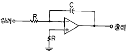
- 적분기
- 미분기
- 검파기
- 차동증폭기
(정답률: 알수없음)
18. 일반적으로 기상 레이더에 사용되고 있는 주파수대는?
- P 밴드
- K 밴드
- O 밴드
- X 밴드
(정답률: 알수없음)
19. GO AROUND는 어디부터 착지점까지 인가?
- 글라이드 슬로프 CAPTURE
- 로컬 라이저 CAPTURE
- 로컬 라이저 ON - COURSE
- FLARE
(정답률: 알수없음)
20. YAW DAMPER 계통의 기능으로 옳지 않은 것은?
- DUTCH ROLL 억제
- 회전 선회시 조력
- 엔진 고장 보상
- 비행기수 상승
(정답률: 알수없음)
2과목: 임의 구분
21. UHF 송신기에서 수정 발진기의 주파수를 원하는 주파수로 얻기 위해서 사용하는 것은?
- 전단 증폭기
- 완충 증폭기
- 전력 증폭기
- 체배기
(정답률: 알수없음)
22. 와이어 안테나를 사용하지 않는 것은?
- HF 통신기기
- 자동방향 탐지기
- 마아카 비이콘의 수신기
- VHF 통신기기
(정답률: 알수없음)
23. 다음 그림은 VOR의 동작 원리이다. (a)의 그림에서 안테나가 시계방향으로 회전할때 동쪽방향에서 나타나는 가변신호는?
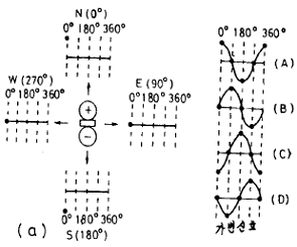
- A
- B
- C
- D
(정답률: 알수없음)
24. 시뮬레이터의 비행시각 시스템 방식 중 옳지 않은 것은?
- 필름영사 방식
- CCTV 방식
- 모조세트 방식
- 컴퓨터작상 방식
(정답률: 알수없음)
25. 방향탐지기(ADF)에서 사용되지 않는 안테나는?
- 루프안테나
- 센서안테나
- 접시형안테나
- 고니오미터
(정답률: 알수없음)
26. 그림과 같은 △결선과 등가인 Y결선의 저항 C 의 크기는 몇[Ω ]인가?
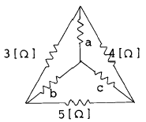
- 2/3
- 3/2
- 3/5
- 5/3
(정답률: 알수없음)
27. 100[V]의 전압에서 5[A]의 전류가 흐르는 전기다리미를 3시간 사용하였다. 이 다리미에서 소비된 전력량은 얼마인가?
- 1[KWh]
- 1.5[KWh]
- 2[KWh]
- 3[KWh]
(정답률: 알수없음)
28. 다음 그림에서 A, B 간의 저항 Ro에 흐르는 전류가 0 이 되기 위한 조건은?
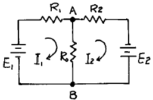
- E1R1 = E2R2
- E1E2 = R1R2
- E1R2 = E2R1
- E1E2 =
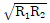
(정답률: 알수없음)
29. 자계중의 한점에 1[㏝]의 정자극(N극)을 놓았을 때, 이에 작용하는 힘의 크기와 방향을 그 점에 대한 무엇이라고 하는가?
- 자계의 세기
- 자위
- 자속밀도
- 자위차
(정답률: 알수없음)
30. 전류에 의한 자계의 방향을 결정하는 것은?
- 플레밍의 우수법칙
- 앙페르의 오른나사법칙
- 렌쯔의 법칙
- 플레밍의 좌수법칙
(정답률: 알수없음)
31. 등전위 면에 관한 설명 중 옳지 않은 것은?
- 전장 안에서 전위가 같은 점을 연결하여 만든 면을 말한다.
- 등전위 면과 전기력선은 수직으로 만난다.
- 등전위 면 끼리는 서로 교차할 수 있다.
- 점전하 Q[C]에 의한 등전위 면은 같은 반지름 위에 있다.
(정답률: 알수없음)
32. 도선의 반지름만을 3배로 하면, 그 전기저항은 어떻게 되는가?
- 9배로 증가한다.
- 1/9배로 감소한다.
- 3배로 증가한다.
- 1/3배로 감소한다.
(정답률: 알수없음)
33. 두 종류의 금속을 그림과 같이 접속하여 두접점 P1, P2를 다른 온도로 유지하면 열기전력이 발생하는데, 이런 현상을 무슨 효과라고 하는가?
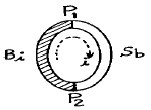
- 제에벡 효과
- 톰슨 효과
- 펠티어 효과
- 주울의 효과
(정답률: 알수없음)
34. 다음 그림에서 R = Xc 일때 C 양단간의 전압은?
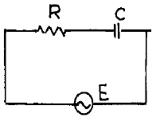
- Ec = E/2
- Ec = E/√2
- Ec = E
- Ec = E/√3
(정답률: 알수없음)
35. R - L 직렬회로에서 L = 0.2[H], R = 2[Ω ] 일 때, 이 회로의 시정수[sec]는?
- 10
- 5
- 1
- 0.1
(정답률: 알수없음)
36. 콜피츠 발진회로에서 L=200μH, C1=2200pF, C2=220pF일 때 발진주파수는 약 몇 kHz 인가?
- 600
- 800
- 1000
- 1200
(정답률: 알수없음)
37. 안정된 전원을 공급하기 위하여 정전압회로에 많이 사용되는 소자는?
- 바랙터 다이오드
- 포토 다이오드
- 제너 다이오드
- 터널 다이오드
(정답률: 알수없음)
38. 단상전파 정류회로에서 출력측에 흐르는 전류의 주파수는 몇 Hz 인가?(단, 입력은 AC 100V 60Hz 이다.)
- 60
- 120
- 180
- 360
(정답률: 알수없음)
39. 그림의 회로에서 VAE 는 약 몇 V 인가?
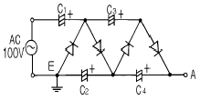
- 400
- 423
- 564
- 1128
(정답률: 알수없음)
40. 영상 증폭회로에서 피이킹 코일을 사용하는 목적은?
- 증폭도를 높이기 위하여
- 저역의 이득을 높이기 위하여
- 고역에서 이득이 감쇠하는 것을 방지하기 위하여
- 어느 특정한 주파수만의 이득을 크게 하기 위하여
(정답률: 알수없음)
3과목: 임의 구분
41. B급 푸쉬풀 증폭기에서 트랜지스터의 부정합에 의한 찌그러짐을 무엇이라 부르는가?
- 위상 찌그러짐
- 크로스 오버 찌그러짐
- 변조 찌그러짐
- 바이어스 찌그러짐
(정답률: 알수없음)
42. 그림과 같은 회로의 출력파형은 어떻게 나타내어 지는가?
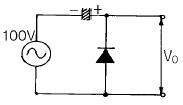
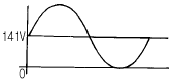
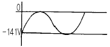
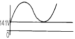
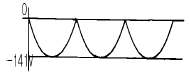
(정답률: 알수없음)
43. PN 접합의 페르미(Fermi)준위는? (단, 열평형 상태임)
- P형이 낮고, N형이 높다.
- P형이 높고, N형이 낮다.
- P형과 N형이 같다.
- 불순물의 양에 의하여 결정된다.
(정답률: 알수없음)
44. 이미터접지 증폭기에서 hfe=90, hoe=25×10-6℧, ZL=20kΩ 일 때 전류이득은 얼마인가?
- 30
- 40
- 60
- 90
(정답률: 알수없음)
45. 그림에서 A=50V, B=10V이다. 변조도 m 은 몇 % 인가?
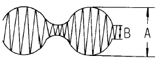
- 44.5
- 55.6
- 66.7
- 77.5
(정답률: 알수없음)
46. 그림과 같은 회로는?
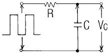
- 미분회로
- 적분회로
- 논리회로
- 펄스회로
(정답률: 알수없음)
47. 반가산기(Half Adder)의 논리회로의 구성은?
- Exclusive OR회로 1개, AND회로 1개
- Exclusive OR회로 1개, OR회로 1개
- OR회로 1개, AND회로 2개
- OR회로 2개, AND회로 2개
(정답률: 알수없음)
48. 그림과 같은 논리회로의 출력 Y는?
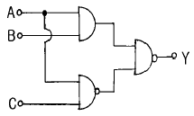
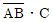
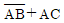
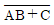
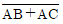
(정답률: 알수없음)
49. 기록 계기의 기록 방법에 해당하지 않는 것은?
- 실선식
- 흡수식
- 자동 평형식
- 타점식
(정답률: 알수없음)
50. 오실로스코프로 직접 측정할 수 없는 것은?
- 주파수
- 위상
- 파형
- 회전수
(정답률: 알수없음)
51. 정류형 계기의 정류기 접속 방식으로 옳은 것은?
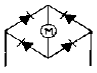
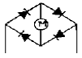
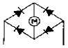
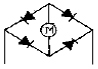
(정답률: 알수없음)
52. 충전된 두 물체 간에 작용하는 정전흡인력 또는 반발력을 이용한 계기는?
- 가동코일형 계기
- 전류력계형 계기
- 유도형 계기
- 정전형 계기
(정답률: 알수없음)
53. 전류계의 측정범위를 100배로 하기 위한 분류기의 저항은 전류계 내부 저항의 몇 배인가?
- 100 배
- 99 배
- 1/100 배
- 1/99 배
(정답률: 알수없음)
54. 마이크로파 측정에서 정재파 비가 2일 때 반사계수는?
- 1/2
- 1/3
- 1
- 2
(정답률: 알수없음)
55. 헤테로다인 주파수계에서 싱글 비트(single beat) 법보다 더블 비트(Double beat) 법이 좋은 이유는?
- 오차가 적다.
- 구조가 간단하다.
- 취급이 용이하다.
- 측정 주파수 범위가 넓어진다.
(정답률: 알수없음)
56. 전해액이나 접지 저항을 측정할 때 사용되는 전원은?
- 직류 및 교류
- 맥류
- 직류
- 교류
(정답률: 알수없음)
57. Wein Bridge는 무엇을 측정하는데 사용하는가?
- 정전용량
- 인덕턴스
- 임피던스
- 역률
(정답률: 알수없음)
58. 측정오차를 설명한 것 중 옳지 않은 것은?
- 개인적인 오차 : 읽는 사람에 따라 생기는 오차
- 우연오차 : 측정조건이 나쁘거나 측정자의 주의력 부족에서의 오차
- 계통적인 오차 : 일정한 원인, 눈금의 부정확, 외부자장 등에 의한 오차
- 이론적인 오차 : 측정조건의 변동, 측정자의 주의력 동요 등에 의한 오차
(정답률: 알수없음)
59. 계수형 주파수계에서 1[㎳]의 게이트 시간동안에 240개의 펄스가 카운트 되었다면, 피측정 주파수는?
- 4.17[㎐]
- 41.7[㎐]
- 240[㎑]
- 2.4[㎒]
(정답률: 알수없음)
60. 고주파 전력을 측정하는 방법 중 콘덴서를 사용하여 부하 전력의 전압 및 전류에 비례하는 양을 구하고, 열전쌍의 제곱 특성을 이용하여 부하 전력에 비례하는 직류 전류를 가동 코일형 계기로 측정하도록 한 전력계는?
- C-C형 전력계
- C-M형 전력계
- 볼로미터 전력계
- 의사 부하법
(정답률: 알수없음)